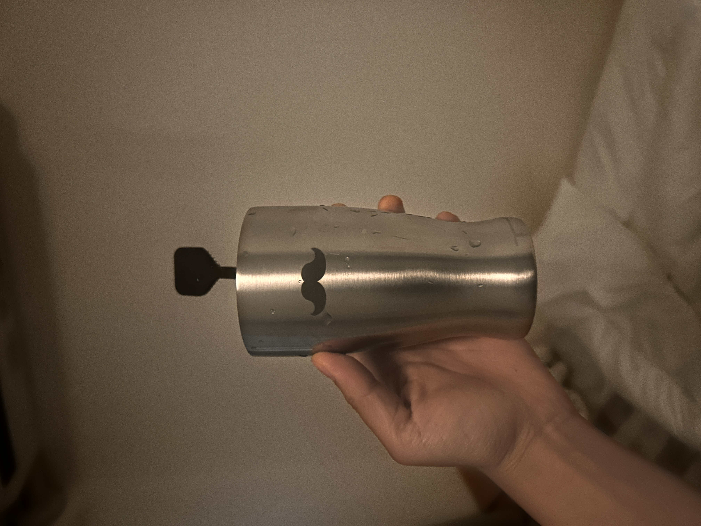
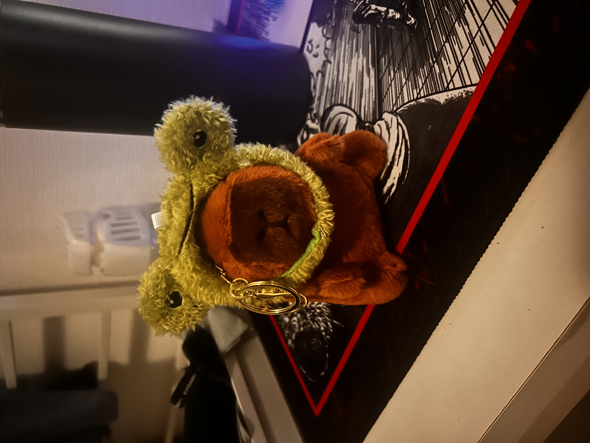

READING CHALLENGE!
2026.05.04
Hello, blog! Today, I had a strange dream that casted me, my brother, this older woman who looked like Dakota Johnson, and I think this Indian woman, but she wasn’t important. The setting was Lola’s (my grandma’s) house. I remember we all were learning how to do our makeup, and Dakota Johnson was showing me some technique to choose my eyeshadow color. I didn’t understand her, so I asked again and George and her began scrutinizing my face up close. They started pointing out the hair on my nose (not my nose hair, it was literally on my nose) saying it looked gross. Instantly, I went to go shave these hairs off but ended up cutting up my nose. It was so embarrasing. Then, when I walked out, George and her were laying on the bed together. It was not as weird in the dream as it is written down, I swear. Even though this was a neutral situation, I was so jealous. I thought, ‘what makes George so special that he gets to lay in bed with this woman? That she feels so comfortable around him?’ I was going to shimmy my way in between them, but then I was woken up by a Japanese ice cream truck began playing a very cute tune. More happened in this dream beforehand, but I do not remember.
Did I have a crush on this woman? Maybe a little, but most of my admiration came from the fact that George was getting more attention from her. Alongside eerie waterparks, me being envious of the attention that George receives is another motif of my dreams. This feeling is so familiar in and outside of the dreamworld.
BOOK CHALLENGE
Today, I challenged myself to finish as many books as I could. Well, I mean listen, since the only way I could get free books was exchanging my credits in audible. I listened in 1.7x speed. I WILL be spoiling every book, so be warned.
BOOK #1: PIZZA GIRL
We follow an eighteen-year-old pizza delivery girl from California. She is pregnant. One day, she recieves a customer who orders a pepperoni and pickle pizza. This customer is a high-class middle-aged woman who is struggling with motherhood. When she delivers the pizza, they understand each other’s struggles. The woman orders pizza every week just so they can talk about life together. Pizza girl becomes obsessed with her, eventually kissing her on the lips. The woman moves away weeks later, so pizza girl breaks into her house, watches the woman and her husband cuddle, and almost shoots him. Crazy…
This book was fine. It was really annoying because it felt like the author wrote the characters to be so over the top/unbelievable/unrealistic. For example, her boyfriend took home a literal gun because he was worried about not being able to tell their son about polar bears because of global warming. Like, what??? Why??? That makes no sense??? The dialogue also maddened me. It sounded like how an egocentric 14-year-old would write the various people in their life. The ‘true to life’/millenial humor also angered me. I don’t have a specific example, but you’re supposed to be like “oh, yeah that is sooo not like the corny humor you so often see, this is different and REAL!” but no one jokes like that unless you’re a millenial or a pick me.
I enjoyed how simple this book was. Not too many things happened, so it was easy to follow. A way to identify a well written book is if you want to continue reading, and I wanted to continue reading, so this is a well written book. It was just personally annoying.
BOOK #2: JUST WATCH ME
Imagine a rebellious young woman living in the big NYC. To raise money for her comatose sister’s life support, she starts live streaming specifically hot things. She goes to extremes eating habeneros, joining a pepper eating contest, lighting herself on fire.
I really liked this book. The narrator was a d-bag which was a very intentional decision by the author. The protagonist is written so interestingly and deeply relatable that you sympathize with her even though she does not-so-great things, like stealing or making fun of her friend’s medication usage. The situations are so believable, and I applaud the author for doing their research. Sometimes in media with the internet as a setting, the author couldn’t make it any clearer that the deepest into the internet they’ve gone is Facebook and middle-aged Youtube (shoutout War of the Worlds). Not this book. Exactly what you expect to see on Twitch is what is written.
The only thing about this book is that in the audio version, the speaker reads out every comment’s username and punctuation they use. They’ll be like “Madamoiselledelle, what are you talking about, question mark. Excelcior three, stop playing dumb. Hot pat of butter, el oh el, I love this dot dot dot.” Usually, when you physically read chats online, you skim over these things, but of course, they can’t really do that in audiobooks since you need to know who’s saying what and with what emphasis, but it’s pestering reguardless. This is the same issue in Rejection by Tony Tulathimutte during the friends group chat section. I would have rather read this book for the amount of livestream-chatting there is (it takes up at least 80% of the book), but I live and learn. Either way, I liked this book.
BOOK #3: SEVERAL PEOPLE ARE TALKING
A man literally gets stuck in his workplace’s Slack and is trying to escape.
This book is so funny and listening in 1.8x speed adds to the humor. He told his coworkers “guys, I’m literally stuck in here I don’t know how to get out,” and they just kept on sending him gifs and telling him to stop LARPing because they thought he was doing a bit. Then, when his friend finally came to his apartment to check on him, he was like “should we call the ambulance?” and he said “my health insurance doesn’t cover this.” The next day, his friend attempts to fix him with a VR headset. Also, there’s a woman who is literally having a crisis in the chat because she cannot stop the sound of howling in her ears, but everyone ignores her and continues talking about their schedule availability. She ends up disappearing. He finds out that he’s experiencing this because the slack bot is trying to switch bodies with him. It succeeds. Then, he ends up falling in love with the friend who’s taking care of him which was quite the surprise. His friend saves him, and he ends up back in his body and in a relationship with the guy.
I clearly have some thing for books with online chats because this book was 100% slack messaging. Unlike Just Watch Me, there’s like six voice actors for each person, so they don’t have to say the username. There are some really fun audiobook exclusive parts, like overlaying chat bot voices to signify an overload of gifs/jpegs being sent.
I really liked this book. It was very heartwarming and fun. I would totally listen to this book again in 1x speed.
THREE BOOKS!
I finished three books today. Great! I feel so intelligent.
GOING OUT WITH NHU & EMI
Today, I went out to eat with Nhu and Emi at 551 Horai. I always see this place with a huge line, so this was a perfect opportunity to get their famous pork bun. It tasted exactly how I think pork buns should taste. The bun was sweet and soft like a mix of white bread and cake, and the filling was crumbly and juicy, unlike the typical tough meatball you get in American Chinese restaurants. The best part was that it was only 320 yen ($2.04) (THANK YOU, EMI FOR PAYING!) Luckily, at the counter, you can buy packs of either 2, 4, 6, or 8 fresh buns to take home, AND they’re cheaper (only 235 yen/$1.50). I got 6 buns. I’m so, so, so, so, so happy for that. I love that so much. I took a video:
Goodbye, Nhu-san! I’m so sad you’re leaving tomorrow. NOOOOOOOOOOOOOO DON’T LEAVE!!! YOU CAN REPLACE MY BROTHER!!! HE DOESN’T BUY ME THINGS!!! HE DOESN’T EVEN GIVE ME BIRTHDAY CARDS!!! PLEEEEEASE!!!
I really loved this reading challenge today, so I might repeat it again tomorrow. Audiobooks are so helpful because while I listen, I can do other things like clean or spend money. I bought a stainless steel cup today at Hands becuase it was on sale thinking it was a plain metal cup. Unwrapping it, I found it’s little cute mustache!:

I have never felt such joy.
I take today’s incredible discoveries as the universe’s apology for deleting that voice memo. I FORGIVE YOU, UNIVERSE! also, HAPPY THREE WEEKS OF MAYASMIND™!!! WOOOOOOO LETS GOOOO!! じゃね！

(gift from Nhu-san. Emi-san said it’s so me.)